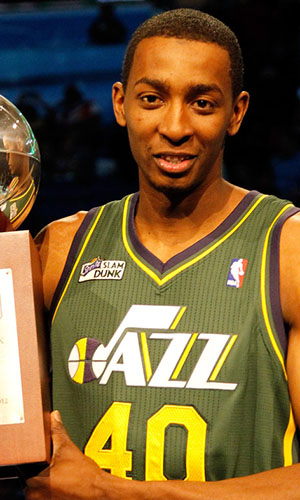

|  |
Матчи |
38 |
|
Передачи (всего/среднее) |
13 |
0.3 |
| В основе |
|
|
Подборы в защите (всего/среднее) |
45 |
1.2 |
| Время (всего/среднее) |
265:49 |
7:00 |
Подборы в атаке (всего/среднее) |
26 |
0.7 |
| Очки (всего/среднее) |
90 |
2.4 |
Подборы (всего/среднее) |
71 |
1.9 |
| 2-очковые броски (всего/среднее) |
30/53 |
0.8/1.4 |
Перехваты (всего/среднее) |
11 |
0.3 |
| 2-очковые броски (% реализации) |
56.6% |
|
Потери (всего/среднее) |
5 |
0.1 |
| 3-очковые броски (всего/среднее) |
2/5 |
0.1/0.1 |
Блокшоты (всего/среднее) |
12 |
0.3 |
| 3-очковые броски (% реализации) |
40% |
|
Блокшоты соперника (всего/среднее) |
4 |
0.1 |
| Штрафные броски (всего/среднее) |
24/29 |
0.6/0.8 |
Фолы (всего/среднее) |
29 |
0.8 |
| Джереми Эванс |
Штрафные броски (% реализации) |
82.8% |
|
Коэффициент полезности (всего/среднее) |
128 |
3.4 |